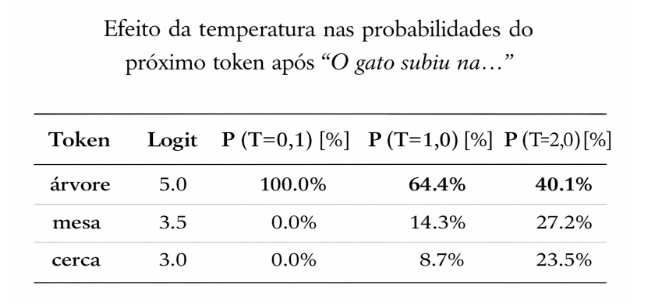
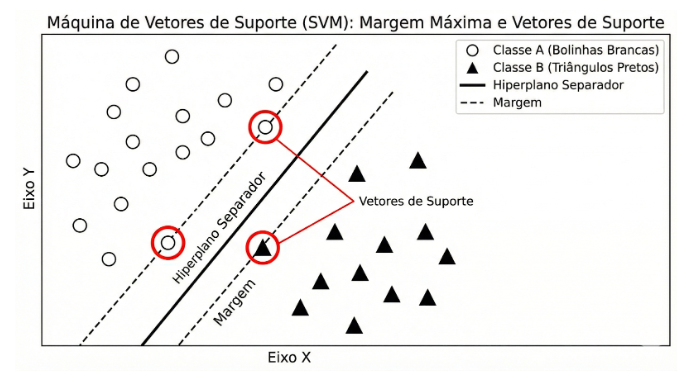
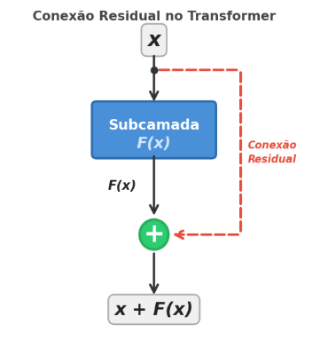
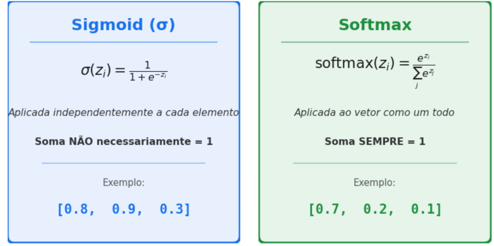
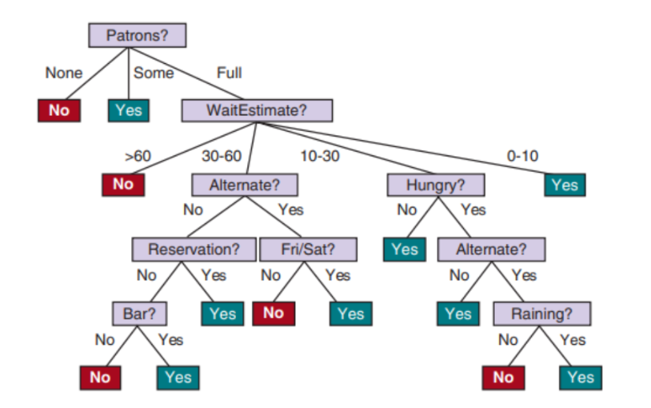
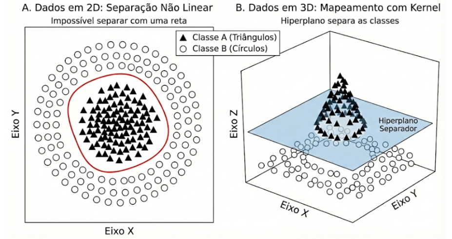
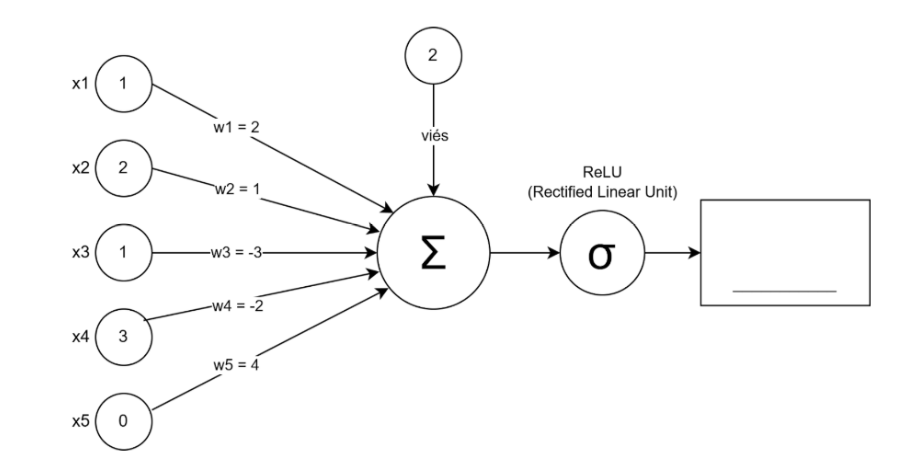
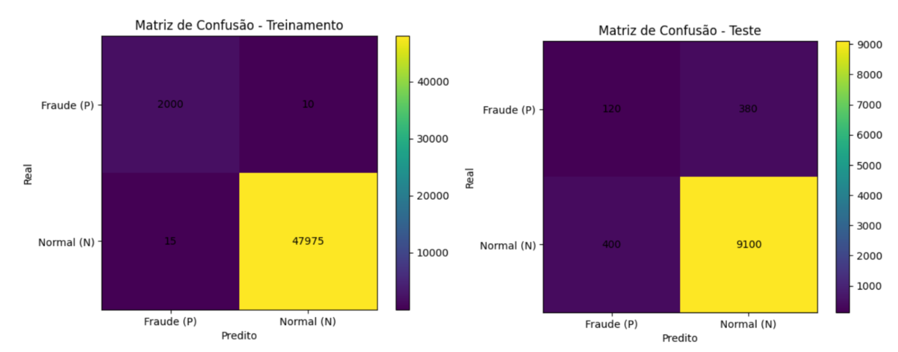
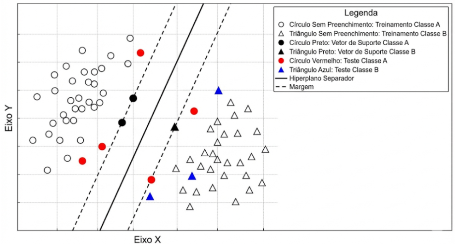

[8º ano EF ao 3º ano do EM]
SEJA MUITO BEM-VINDO(A)! A 2ª edição da Olimpíada Nacional de Inteligência Artificial (ONIA) é um evento aberto e gratuito voltado para jovens e dividido em três categorias. Consiste em uma ação exclusivamente cultural e recreativa, sendo a participação voluntária e desvinculada da aquisição de qualquer bem, serviço ou direito.
Esta prova de 3ª fase é individual, online, mas sem consulta livre. Siga nossas redes sociais. www.instagram.com/oniabrasil
Você precisará consultar as redes sociais para acompanhar a divulgação de resultados e dos polos de aplicação das fases presenciais. Os certificados usarão este nome na emissão. Indique também corretamente cidade, escola e estado. Você consegue editar teus dados, para que a gente consiga saber sua escola e sua cidade. Boa prova!
Questão 1
Uma escola deseja desenvolver um sistema para ajudar alunos a organizarem seus estudos antes das provas finais. O desafio é que muitos estudantes relatam sentir que "há conteúdo demais" e não sabem por onde começar.
Ao projetar o sistema, a equipe decide que ele deverá:
Durante os testes, a equipe percebe que os alunos passam a visualizar melhor o volume real de conteúdo e conseguem cumprir o cronograma com mais consistência.
Qual é a principal razão pela qual essa estratégia torna o problema mais administrável para os alunos?
Questão 2
Um estudante de Ciência de Dados escreveu um algoritmo em Python para avaliar o desempenho de um modelo de Inteligência Artificial logo após o treinamento. Ele extraiu os valores de uma Matriz de Confusão, mas ao criar a função, esqueceu de nomear corretamente as variáveis das métricas, chamando-as apenas de metrica_X, metrica_Y e metrica_Z.
Analise o trecho de código abaixo:
Realizando o teste de mesa (cálculo passo a passo) do código acima, qual das alternativas a seguir indica corretamente os valores numéricos impressos nas variáveis x, y e z e os respectivos nomes teóricos que essas métricas recebem na área de Machine Learning?
Questão 3
Um hospital universitário está desenvolvendo um modelo de IA para auxiliar na detecção precoce de uma doença genética rara, que afeta aproximadamente 1% da população.
Após os testes iniciais, a equipe obtém os seguintes resultados no conjunto de validação:
Os médicos percebem que o sistema quase nunca acusa a doença quando o paciente está saudável. No entanto, muitos pacientes que realmente possuem a condição não são identificados pelo modelo.
Considerando as definições formais das métricas:
Qual interpretação é mais adequada para esse cenário?
Questão 4
Após o treinamento inicial, modelos de linguagem (LLMs) podem ser refinados utilizando Aprendizado por Reforço (RL). Uma técnica popular é o GRPO (Group Relative Policy Optimization), que funciona da seguinte forma simplificada:
Um conceito importante nesse processo é o reward hacking (exploração da recompensa): o modelo pode aprender a maximizar a recompensa de maneiras não intencionais, encontrando "atalhos" que satisfazem o critério de recompensa sem realmente melhorar a qualidade geral das respostas.
Uma forma de controlar esse comportamento, é usar um parâmetro de divergência KL, que penaliza o modelo quando ele se afasta demais do modelo original (referência), evitando mudanças drásticas no comportamento.
Considere a seguinte situação: um engenheiro tem um LLM que frequentemente responde no idioma errado (por exemplo, responde em inglês quando o usuário pergunta em português). Ele decide aplicar RL com GRPO usando a seguinte função de recompensa:
Após o treinamento, o modelo passa a responder consistentemente no idioma correto. Porém, a precisão das respostas caiu drasticamente — o conteúdo das respostas ficou muito pior.
O que explica esse resultado e qual seria a melhor forma de mitigá-lo?
Questão 5
Modelos de linguagem (LLMs) geram texto token por token. A cada passo, o modelo calcula uma pontuação (chamada logit) para cada token do vocabulário, indicando quão provável ele é como próximo token. Essas pontuações são convertidas em probabilidades usando a função softmax.
Um parâmetro chamado temperatura (T) pode ser aplicado antes do softmax para controlar a "criatividade" do modelo.
Para ilustrar, considere que o modelo está gerando a próxima palavra após "O gato subiu na" e os três tokens mais prováveis têm os seguintes logits:

| Token | Logit |
|---|---|
| árvore | 5.0 |
| mesa | 3.0 |
| parede | 1.0 |
Baseado na tabela acima e no conceito de temperatura, qual afirmação é INCORRETA?
Questão 6
Modelos de linguagem (LLMs) não "leem" texto diretamente: eles primeiro transformam o texto em tokens usando um tokenizador (por exemplo, BPE/WordPiece/Unigram). Em geral, quanto mais tokens um texto vira, maior o custo de treino e inferência (mais passos de atenção, mais memória e tempo), e maior a chance de "estourar" o limite de contexto.
Um pesquisador compara dois tokenizadores para treinar um modelo voltado ao português:
Ele faz um teste em textos em português e observa:
Considere as afirmações:
A alternativa correta é:
Questão 7
Um grupo de pesquisa compara dois datasets para treinar um modelo de classificação médica:
Após treinamento com o mesmo orçamento computacional, o modelo treinado com o Dataset B apresenta melhor desempenho no conjunto de teste limpo.
Qual é a explicação mais tecnicamente consistente?
Questão 8
Na área de Machine Learning, a técnica conhecida como Máquina de Vetores de Suporte (SVM – do Inglês Support Vector Machines) tenta encontrar a melhor "reta" (hiperplano de separação) para separar duas classes de dados, buscando a "rua" mais larga possível entre elas. Na figura acima, os três pontos destacados que tocam os limites dessa "rua" tracejada recebem o nome especial de Vetores Suporte. Se você deletasse do gráfico todos os outros pontos que não estão destacados e treinasse o algoritmo novamente, o que aconteceria com a reta separadora?

Questão 9
Na arquitetura Transformer, cada bloco é composto por subcamadas como Self-Attention (autoatenção) e FFN (rede feed-forward). Um detalhe importante do design é que, em cada subcamada, a entrada original é somada à saída da subcamada antes de passar adiante. Ou seja, se a entrada de uma subcamada é x e a subcamada computa uma função F(x), o resultado final dessa etapa não é simplesmente F(x), mas sim:
saída = x + F(x)
Essa operação é chamada de conexão residual (residual connection) ou skip connection.

Por que essa técnica é fundamental para treinar Transformers com muitas camadas?
Questão 10
Em redes neurais, as funções de ativação são responsáveis por transformar os valores de saída de uma camada. Duas funções muito conhecidas produzem valores entre 0 e 1:

| Função | Fórmula |
|---|---|
| Sigmoid | σ(x) = 1 / (1 + e⁻ˣ) |
| Softmax | σ(x)ᵢ = eˣᵢ / Σⱼ eˣʲ |
Considere dois problemas de classificação de imagens:
Analise as afirmações:
A alternativa correta é:
Questão 11
Árvores de decisão são construídas a partir do quão relevante é um atributo ou feature para a tomada de decisão final, nesse sentido, quão mais próximo da raíz, mais informações aquele atributo fornece. Em outras palavras, o atributo de maior qualidade decisiva detém o maior ganho de informação.
Na figura abaixo, entre os atributos Raining, Hungry e WaitEstimate, qual é o atributo, respectivamente, de maior e o de menor ganho de informação?

Questão 12
O problema é que fazer esse mapeamento para espaços de dimensão muito alta consome um poder computacional gigantesco. Para contornar esse obstáculo, o algoritmo faz uso do chamado Truque do Núcleo (mais conhecido pelo termo em inglês "Kernel Trick"). O que esse "truque" faz?

Questão 13
Às vezes, os dados estão misturados de tal forma que nenhuma linha reta consegue separá-los (problema não-linearmente separável). O 'Truque do Kernel' (Kernel Trick) resolve isso de forma elegante. O que ele faz essencialmente?
Questão 14
Modelos de linguagem (LLMs) não "leem" texto diretamente: eles primeiro transformam o texto em tokens usando um tokenizador (por exemplo, BPE/WordPiece/Unigram). Em geral, quanto mais tokens um texto vira, maior o custo de treino e inferência (mais passos de atenção, mais memória e tempo), e maior a chance de "estourar" o limite de contexto.
Um pesquisador compara dois tokenizadores para treinar um modelo voltado ao português:
Ele faz um teste em textos em português e observa:
Considere as afirmações:
A alternativa correta é:
Questão 15
Um Perceptron calcula sua saída de forma direta: ele multiplica cada valor de entrada pelo seu respectivo peso, soma todos esses resultados junto com um valor fixo chamado viés (bias) e passa o total por uma função de ativação.
Imagine que um neurônio de um sistema antifraude de um banco está avaliando uma transação suspeita baseando-se em 5 características numéricas. Os valores de entrada (x) recebidos e os pesos (w) definidos pela rede são:
Para decidir o valor final, o neurônio utiliza a função de ativação ReLU (Rectified Linear Unit), definida como:
ReLU(z) = max(0, z)

Qual será o resultado final (saída) gerado por esse neurônio?
Questão 16
Um pesquisador está treinando uma rede neural profunda com 20 camadas ocultas totalmente conectadas para classificar imagens médicas. A arquitetura utiliza:
Durante o treinamento, ele observa que:
Após análise matemática, ele conclui que o problema está relacionado ao fato de que a derivada da função sigmoid está limitada ao intervalo (0, 0.25), o que, ao ser multiplicado repetidamente ao longo de muitas camadas, leva a gradientes extremamente pequenos.
Qual modificação arquitetural é mais adequada para mitigar esse problema mantendo a profundidade da rede?
Questão 17
Uma fintech desenvolveu um modelo usando 300 variáveis comportamentais para prever fraude em cartões de crédito. O modelo foi treinado em 50.000 transações e testado em 10.000 novas transações. Classe positiva = fraude.
Os resultados estão representados nos gráficos a seguir:

| Métrica | Treinamento | Teste |
|---|---|---|
| Recall | 2000 | 120 |
| Precisão | 10 | 380 |
| Acurácia | 47975 | 9100 |
Qual alternativa descreve melhor o modelo?
Questão 18
Em Machine Learning, após o computador desenhar a fronteira de decisão de um SVM usando os dados de treinamento e os vetores de suporte (em preto, que definem as margens de separação), nós precisamos medir se essa reta é realmente boa para prever novos eventos. Para isso, apresentamos dados inéditos (os dados de teste coloridos em vermelho e azul) e observamos de que lado da reta eles caíram.
Para resumir os acertos e erros do modelo, os cientistas utilizam uma ferramenta chamada Matriz de Confusão.
Neste problema, vamos considerar que o objetivo (Classe Positiva) era encontrar os elementos da Classe A (círculos vermelhos). Assim, qualquer dado de teste que caia no lado esquerdo da reta recebe uma "Predição Positiva", e qualquer dado no lado direito recebe uma "Predição Negativa".
Avaliando apenas os 8 dados de teste coloridos descritos na figura, quais seriam os valores exatos de Verdadeiros Positivos (TP), Falsos Positivos (FP), Verdadeiros Negativos (TN) e Falsos Negativos (FN) da nossa Matriz de Confusão?

Questão 19
Uma universidade quer reduzir evasão e reprovação. Para isso, criou um programa de intervenção chamado "Fica Mais Um", que oferece: monitoria extra, trilhas de revisão, atendimento psicopedagógico, bolsa de internet (para quem precisa). Só que o orçamento é limitado: o programa só consegue atender no máximo 600 alunos por semestre. Então a reitoria pede um modelo que identifique alunos com alto risco de reprovação para priorizar quem deve entrar no programa.
Contexto do dataset: Você recebe dados de 10.000 alunos do semestre anterior (base de treino/validação), com features como frequência, acessos ao Moodle, entregas atrasadas, etc.
A variável-alvo é:
Distribuição real observada: 9.500 aprovados / 500 reprovados.
O "modelo baseline": Um analista júnior argumenta: "Se eu sempre prever 'aprovado', vou ter uma acurácia enorme. É um ótimo baseline e talvez até suficiente." Esse modelo, portanto, nunca prevê "reprovado".
Considerando acurácia, precisão, recall e F1 (com foco na classe reprovado), qual alternativa descreve melhor o desempenho desse modelo?
Questão 20
Ainda sobre o texto da questão anterior, considerando acurácia, precisão, recall e F1 (com foco na classe reprovado, que é a rara e a mais importante para intervenção), qual alternativa descreve melhor o desempenho desse modelo?